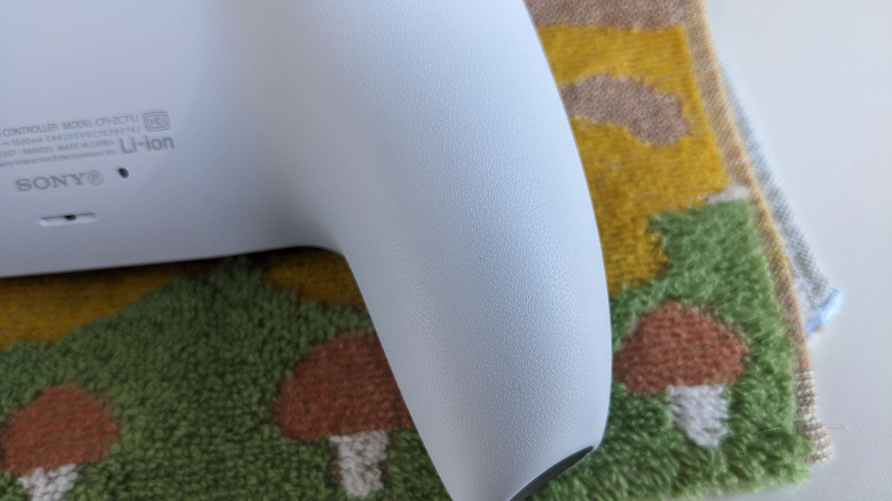
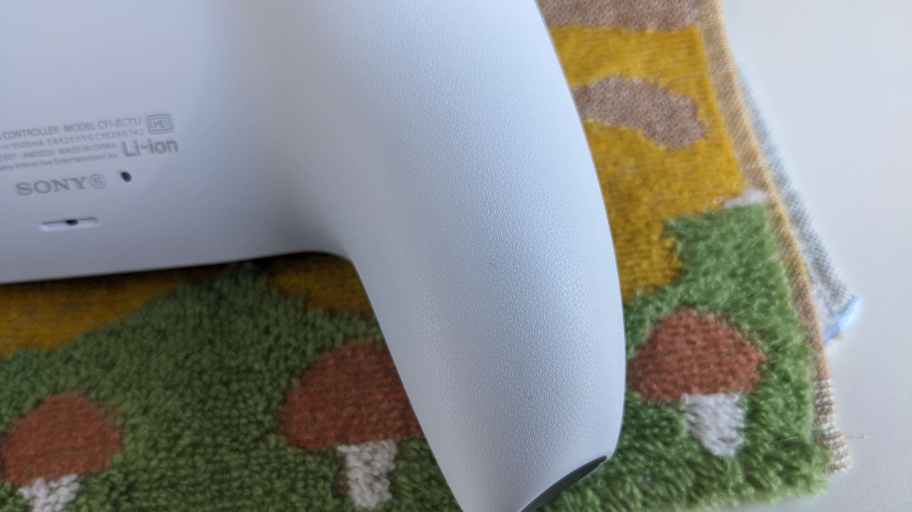
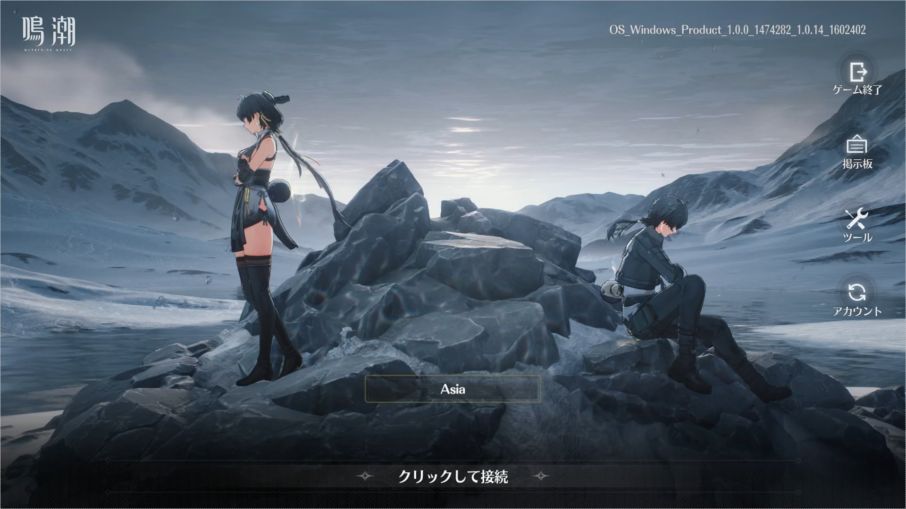
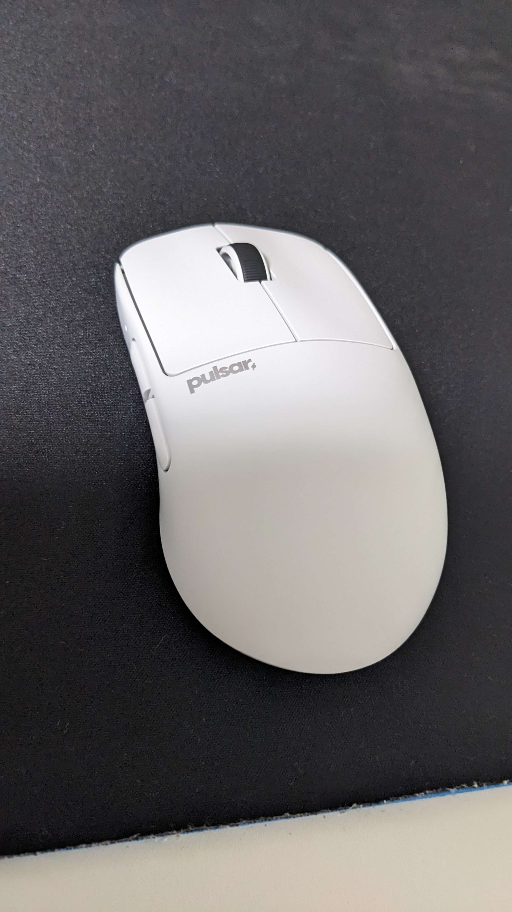

PS5コントローラーの表面
2024年5月25日
本日机を掃除していたときにPS5コントローラーを手に取ってみると本体裏面にきめ細かい表面加工が施されているのを見つけました。
購入して1ヶ月ほど経ちますが、△◯☓□の模様に全然気が付きませんでした。（写真キレイに取れてなくてスイマセン）
本日机を掃除していたときにPS5コントローラーを手に取ってみると本体裏面にきめ細かい表面加工が施されているのを見つけました。
購入して1ヶ月ほど経ちますが、△◯☓□の模様に全然気が付きませんでした。（写真キレイに取れてなくてスイマセン）
2024年5月23日11:00リリースのARPG「鳴潮」始めました。
なぜか10:00頃からプレイできている方もいて私もゲームを起動してみましたがログインできませんでした(11:00まで待つぜ)。
11時頃id取得のためゲームを再び起動すると無事ログインできてゲームが開始されました。
初日の感想としてはアクションが爽快で漢字は難しいけどストーリーの翻訳は違和感がなくて面白かったといったところです。
またバグは多数見受けられましたが運営のバグ修正は迅速でとても好感が持てます。
pulser X2Hを購入した。
midiumとminiで迷ったが最終的にmidiumを選んだ。4Kドングルも合わせて購入しようと思ったが私の遊んでいるゲームでは対応していないということなのでやめた。
マウス本体の質感はとても良く長く使い続けたいと思った。 また充電と有線接続を行うためのケーブルは布巻きでマウスとの接続部分は少し上に反っていてpulserくんやるな~と思った。
dpi調節ボタンは本体裏面にあるので誤爆の心配がないのも良かった。専用ソフトの動作も異常なく動作してくれた。(某hubとは違うなぁ)
マウスの形状についはケツデカでzoweのzaシリーズと形状が似ているらしい(zaシリーズ触ったことないからしらんけど)。
マウスパッドの滑りが悪くなってきたので洗濯した。
天気は曇りだったが半日ほどで乾いた。少し滑りが良くなっていたが3年も使っているので滑りが悪くなっているので買い替えを検討中。